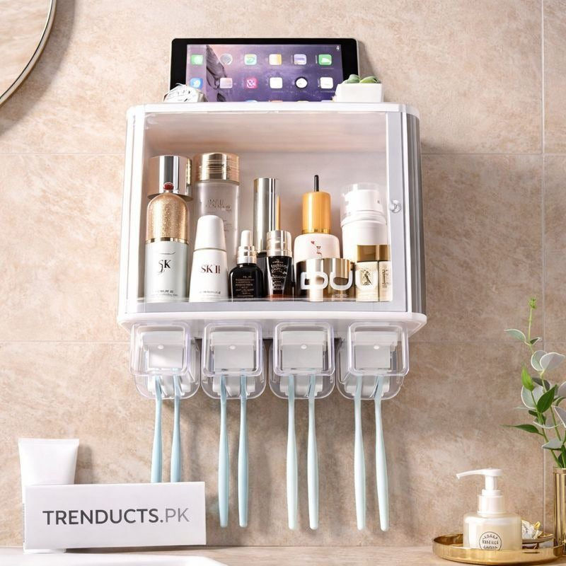
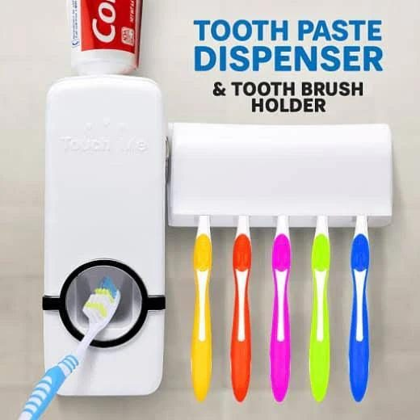
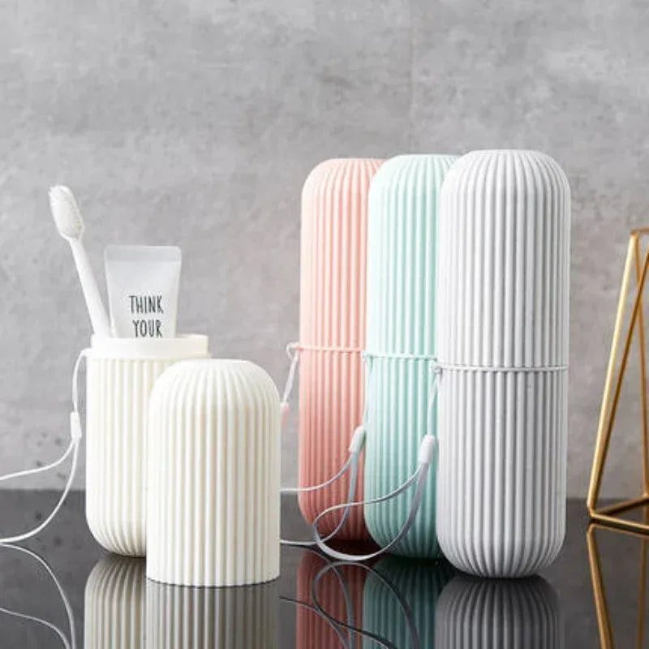

In a shared family bathroom, toothbrushes often end up in one wet cup. Hygienic toothbrush storage ideas, from wall cabinets to toothpaste dispensers and travel cases.

In many Pakistani homes, the whole family shares one or two bathrooms. Morning routines are a rush: children getting ready for school, parents for work, grandparents for prayer. At the wash basin, toothbrushes from five or six people often stand together in one cup, bristles touching, sitting in a puddle of water at the bottom. It is one of the least hygienic corners in the house, and also one of the easiest to improve.
Toothbrushes are damp after use, and damp bristles are where bacteria grow. When brushes touch each other, germs can pass from one to another. In a bathroom, aerosol particles from the toilet can also settle on open brushes. None of this is a reason to panic, but storing brushes properly is a simple way to protect the family, especially young children and elderly people.
Dentists commonly recommend a few habits:
These steps take seconds but make a real difference.
Wall-mounted toothbrush holders keep brushes off the wet basin counter, free up space and stay cleaner. Some come as small bathroom cabinets with a mirror, shelves for creams and razors, and slots for toothbrushes and paste. They are ideal for small bathrooms in flats where the counter is tiny or non-existent. Many can be fixed with strong adhesive, no drilling needed, which suits rented homes.

A toothpaste dispenser squeezes paste onto the brush with a simple push, without anyone touching the tube opening. This is more hygienic in shared bathrooms, avoids squeezed and messy tubes, and is fun for children, who often brush more willingly when they get to press the button. Choose a dispenser that is easy to refill and clean.
Children need extra encouragement to brush twice a day. Give each child their own coloured brush and a clearly marked slot in the holder. Holders with cartoon designs or individual cups make brushing feel personal. Place the holder at a height children can reach with a small step stool.
For school trips, sleepovers at Nani's house, travel to the north or Umrah, use a ventilated travel case. It protects the brush from dirt in your bag. Clean the case regularly and let the brush dry before closing it whenever possible.

The holder itself needs cleaning. Water and toothpaste residue collect at the bottom and become slimy. Wash it once a week with hot soapy water, or soak in diluted vinegar to remove deposits. Dry before putting the brushes back. Wipe the dispenser nozzle regularly.
While you are fixing the toothbrushes, organise the rest of the basin area. Keep only daily items out: soap or handwash, toothbrushes and paste. Store shaving kits, creams and spare products in a cabinet or a small rack. A clear counter is easier to wipe and looks fresher.
Make brushing part of the morning and night routine, especially before bed after the last meal. Use a two-minute timer or a short song for children. Schedule dental check-ups at least once a year.
When relatives stay over, offer a spare brush and a separate slot or cup, so guests do not have to store theirs beside the family's. A small guest kit with a new brush, paste and soap is a thoughtful touch.
Toothbrush holders come in plastic, ceramic, glass and steel. Ceramic and glass look elegant but can break if knocked onto a hard floor. Good quality plastic is light and practical for children. Whatever the material, look for drainage holes at the bottom, smooth surfaces that are easy to wipe, and a design that keeps brush heads apart.
Wall cabinets with toothbrush holders, toothpaste dispensers and travel cases are available at www.trenducts.pk, with delivery across Pakistan. A small change at the basin keeps the whole family healthier.